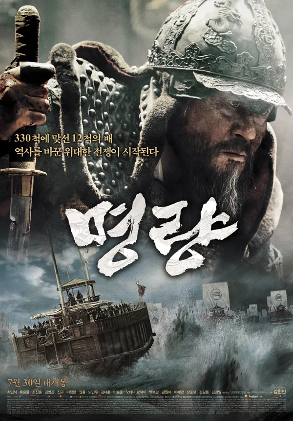

명량 해전 (1597년)

명량 해전은 1597년(선조 30년) 음력 9월 16일, 정유재란 당시 이순신 장군이 이끄는 조선 수군 13척이 울돌목(명량)에서 일본 수군 133척(선봉 133척, 전체 330여 척)을 물리친 세계 해전사상 유례없는 대승입니다.
- 일시: 1597년 음력 9월 16일
- 장소: 전라남도 해남군과 진도군 사이의 해협(울돌목)
- 주요 명언: "신에게는 아직 12척의 배가 남아 있사옵니다.

명량 해전은 1597년(선조 30년) 음력 9월 16일, 정유재란 당시 이순신 장군이 이끄는 조선 수군 13척이 울돌목(명량)에서 일본 수군 133척(선봉 133척, 전체 330여 척)을 물리친 세계 해전사상 유례없는 대승입니다.